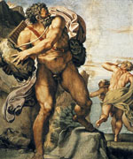

Поліфем, в грецькій міфології син Посейдона і морської німфи Тооси. Одноокий велетень-циклоп, швидше за все, жив на Сицилії. Полифем закохався в німфу Галатею, але вона відкинула його, так як любила красеня Акіда. У нападі лютою ревнощів циклоп убив Акіда, але Галатея перетворила коханого в сицилійську річку, що носить його ім'я.
Під час своїх довгих мандрівок Полифема відвідали греки і Одіссей, який представився велетню-циклопові як "ніхто". Полифем виявився негостинним господарем і, замкнувши греків разом з худобою в печері, поїдав їх по одному на вечерю.
Одіссей не наважувався вбити циклопа вночі, адже його люди не змогли б зрушити величезний камінь, який закривав вхід. Йому довелося скласти хитромудрий план втечі.
Напоївши Полифема вином, греки засліпили його. Поранений гігант заревів від болю, а на питання прибігли циклопів відповідав, що на нього напав "ніхто". Побратими вирішили, що він або п'яний, або збожеволів. Вранці Полифем відкрив вихід з печери і став випускати своє стадо, обмацуючи спини кожної тварини. Але Одіссей і його товариші прив'язалися під животами овець і зуміли вибратися непоміченими. Дізнавшись від Одіссея його справжнє ім'я, велетень в люті став жбурляти скелі в його корабель.